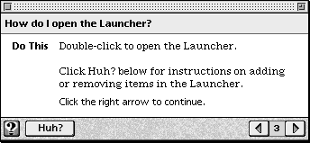
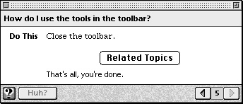
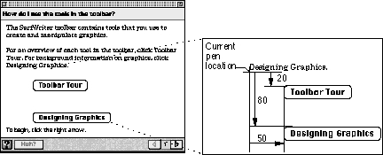
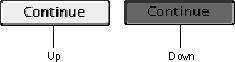
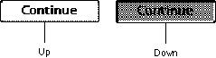

Legacy Document
Important: The information in this document is obsolete and should not be used for new development.
Important: The information in this document is obsolete and should not be used for new development.


Designing Buttons
This section contains guidelines for creating buttons for your panels. For more information on button alignment, see "Designing Your Own Panel Format" on page 2-51. Also see the guidelines on standard toolbox controls in the Macintosh Human Interface Guidelines.You can add two types of buttons to your panels: navigation and content area.
- A navigation button always appears in the navigation bar of a panel and takes the user to different parts of the guide file (for example, a navigation button can take the user back to the access window).
- A content area button appears in the content area of a panel and is generally associated with an event or navigation route specific to that panel. You can add these types of buttons to a content area: radio buttons, checkboxes, standard, and three-dimensional. They are described here.
- Radio buttons and checkboxes both take the user to a single branch in the sequence; the user can select only one radio button at a time and select one or more checkboxes at time.
- A standard button is a two-dimensional button, drawn by the Macintosh toolbox, that has an event associated with it (for example, a Cancel button, which dismisses the operation the user started).
- A three-dimensional button can perform as either a navigation button or a standard button (for example, a three-dimensional button that takes the user to a related sequence). It has two states to indicate its current behavior--up and down--and contains a graphic inside it.
- Note
- You cannot use more than 50 user control features--that is, buttons and checkboxes--for any single sequence.

Designing Navigation Buttons
In the navigation bar, you can add from one to three buttons to supplement the default navigation arrows. (If a panel does not use the default navigation arrows, they appear dimmed on the navigation bar.) For any navigation bar button, you should use a height of 18 pixels and include a gray pixel (level 1 or 2) in its corners so that it blends into the panel background.If possible, use the same set of navigation bar buttons throughout your guide file. If a panel in a sequence requires a button that is unique to it (for example, a button that launches a demonstration that is specific to that panel), do not use a navigation button. Instead, use a content area button. See the next section for details.
On the navigation bar of each panel, provide a GoStart button to take the user back to the access screen. The GoStart button contains the Apple Guide icon, or lightbulb, and should appear in the lower-left corner of each panel. (In some system software versions, the GoStart button instead contains the word "Topics".)
Another useful button to place on the navigation bar is the Huh? button, because you can use it to take the user to a place that expands the information on a panel. The Huh? button contains the word "Huh?" (or its localized equivalent); it should appear on all panels in the sequence. The Huh? button should appear active on the panel only if you associate it with another panel. Then if the user clicks the Huh? button, the panel associated with it opens on top of the original panel. If you do not associate a panel with this button, it will appear dimmed. For more information, see "Designing a Panel Associated With a Huh? Button" on page 2-64.
Figure 2-45 shows a panel that contains GoStart and Huh? buttons in the navigation bar.
Figure 2-45 A panel with GoStart (using the lightbulb icon) and Huh? buttons in the navigation bar

A guide file can contain only one dimmed navigation button at a time (that is, a navigation button that is inactive). Apple recommends that you provide dimmable functionality to the Huh? button.
- Note
- Guide Maker provides the files needed to create the GoStart and Huh? buttons.
Designing Content Area Buttons
Apple Guide imposes no limit on the number of buttons that you can add to the content area of a panel. Apple, however, sets a specific limit for radio buttons and checkboxes and recommends that you avoid placing an excessive number of standard and three-dimensional buttons; otherwise, your panel design can become confusing and cluttered. Also remember that Apple Guide imposes a maximum number of 50 control features per sequence, as described earlier in this section.By default, radio buttons, checkboxes, and standard buttons use the system font. You should use Guide Script commands to specify that these button types instead use the Apple Guide font.
You can have Apple Guide place the button inline with the surrounding text and justify it within the current format, or you can specify the button's location relative to the current pen position by specifying a specific point. To make localization easier, Apple recommends that you use relative rather than absolute positioning of buttons on the panel. (When translated into another language, panel text can increase and possibly overflow onto a panel button.)
Figure 2-29 shows a panel with a button centered with relative positioning.
Figure 2-46 A panel with a button centered using relative positioning

This particular panel uses the Tag and Body format. Notice that Guide Maker centers the button on the Body format. By default, Apple Guide places the button just under the panel text. You specify left, center, or right justification within the current format. If you prefer more white space between the panel text and button, add a carriage return after the button, as shown in Figure 2-29.
In contrast, Figure 2-47 shows a panel containing two buttons, each with absolute positioning.
Figure 2-47 A panel containing two buttons with absolute positioning

This panel uses the Full format. Notice that the location of the first button is specified as
Point(50,20), and the location of the second button asPoint(50,80). Guide Maker places the first button 50 pixels to the right of and 20 pixels down from the current pen location and places the second button 50 pixels to the right of and 80 pixels down from the current pen location.
If you use a particular type of button on more than one panel, it should appear in the same location for all panels that use it throughout your guide files. For example, you might place all Tip buttons on the lower-right side of the panel content area.
- IMPORTANT
- If you place a button with absolute positioning, the current pen location is not reset (it remains at its current location until you place an object with relative positioning).

The rest of this section contains guidelines specific to creating standard and three-dimensional buttons, as well as radio buttons and checkboxes.
Using Standard Buttons
Standard buttons are a set height of 20 pixels with a minimum width of 59 pixels (the width of a standard OK button). Apple Guide automatically
You can specify the button's general location (left, right, or center) or its location relative to the current pen position by specifying a specific point.
- adjusts the button width to accommodate the button title (the width of the text plus 10 pixels on each side)
- highlights the button in response to the user's actions
- places the button inline with the surrounding text and justifies it within the current format
You must specify the button's title, the button's location on the panel, and the event function (typically an Apple event) that Apple Guide calls when the user clicks the button.
Using Three-Dimensional Buttons
You create a three-dimensional button of any size. You must provide the color pictures that describe the button's appearance when it's selected (up) and not selected (down). You should also provide an additional set of black-and-white pictures, which Apple Guide uses according to the bit depth of the user's monitor. Be sure to use the same size for both pictures.You must also provide the button's location on the panel and the event function that Apple Guide calls when the user clicks the button.
One of the recommended panel types, Continue, uses a three-dimensional button. Figure 2-48 shows the up and down appearance, in grayscale, of a color Continue button.
Figure 2-48 The up and down appearance (in grayscale) of a color Continue button

In contrast, Figure 2-49 shows the up and down appearance of a black-and- white Continue button.
Figure 2-49 The up and down appearance of a black-and-white Continue button

For more information on the Continue panel, see "Designing a Continue Panel" on page 2-67.
Apple Guide places the button inline with the surrounding text and justifies it within the current format. You can specify the button's general location (left, right, or center) or its location relative to the current pen position by specifying a specific point. For example, if you specify the button location as
Point (50,100), Guide Maker places the button 50 pixels to the right and 100 pixels down from the current pen location. For more information on placing buttons at specific coordinates, see the previous section. If you create a three- dimensional button that resembles an icon, you should also provide a label that tells the user what to do.Using Radio Buttons and Checkboxes
Use radio buttons or checkboxes to have the user select branches in a sequence, following these guidelines:
You should use a prompt that tells the user how to select the radio button or checkboxes: for example, "Make your choice, then click the right arrow." Above the radio buttons or checkboxes, you should include an instruction that tells the user what to do. For example, the instructions for radio buttons can say "Which do you want to do? Click one." In contrast, the instruction for checkboxes can say, "What do you want to do? Click one or both." For examples of such instructions, see "Designing Panel Prompts" on page 2-44.
- Use radio buttons to let the user choose only one of several branches that are mutually exclusive (for example, for branches that describe different methods to achieve the same goal).
- Use checkboxes to let the user choose one or more branches of related information (for example, for branches that describe parallel tasks or tasks that occur in the same place).
- Do not exceed four radio buttons or checkboxes on the content area of a single panel.
- Do not use radio buttons and checkboxes on the same panel.
- Specify the default state (on or off) of each radio button and checkbox.
- Provide each radio button or checkbox with a title that clearly identifies the choice it offers.
- Place the title in the Apple Guide font without boldface.
- Keep the title as short as possible. Brevity is particularly crucial for successful localization; if a title expands in size when translated into another language, it can overflow to other text or objects on the panel.
- Use a unique name for each title in a single sequence. Apple Guide cannot distinguish between two radio buttons or checkboxes with the same title on different panels in the same sequence.
- Make sure that checkbox titles reflect clearly different states.
- Use the default formatting that Apple Guide provides for radio buttons and checkboxes, where the radio button or checkbox appears inline with the surrounding text and is justified within the current panel format. Be sure, however, to change the default font to the Apple Guide font.